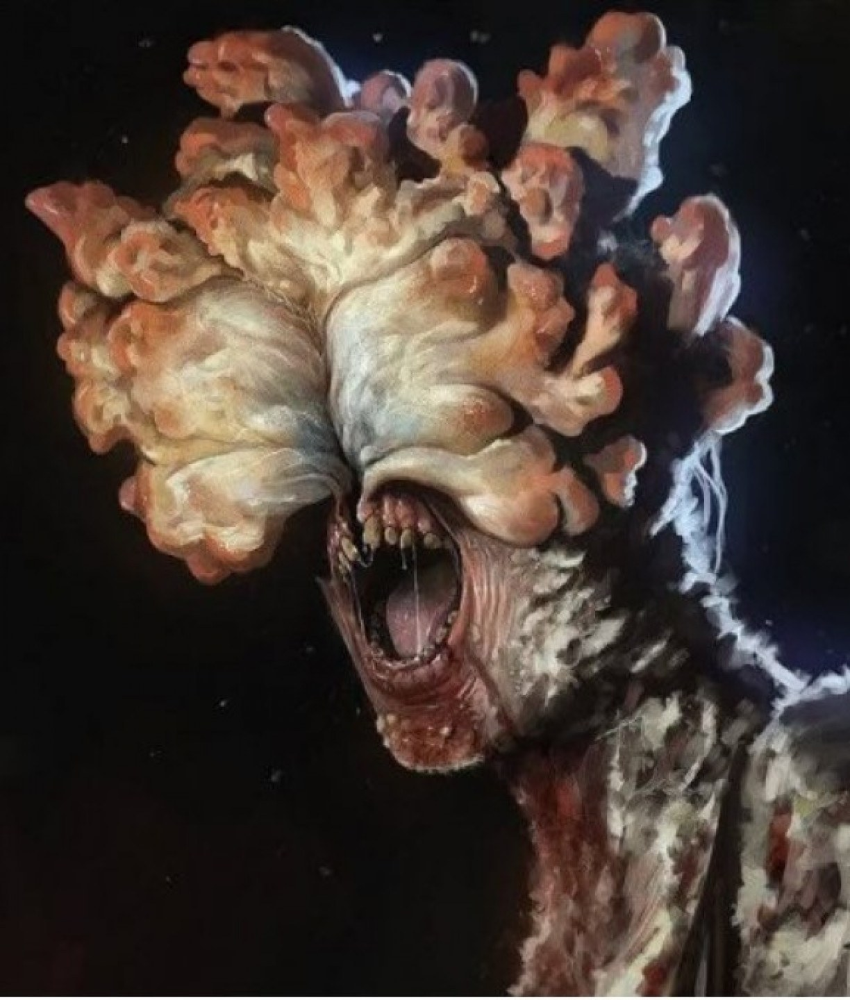

ALGUNS PREMIOS QUE THE LAST OF US GANHOU
- GameSpot's Best of E3 2012 Editors' Choice Awards
- The Daily Telegraph's E3 2012: Best in show
- The Electric Playground's Best of E3 Winners
- Electronic Gaming Monthly Presents: The Best of E3 2012
- Destructoid's Best of E3 2012
Personagens
-
Principais

-
Secundários
-
Infectados

ALGUNS VÍDEOS DE FAMOSOS JOGANDO TLOU